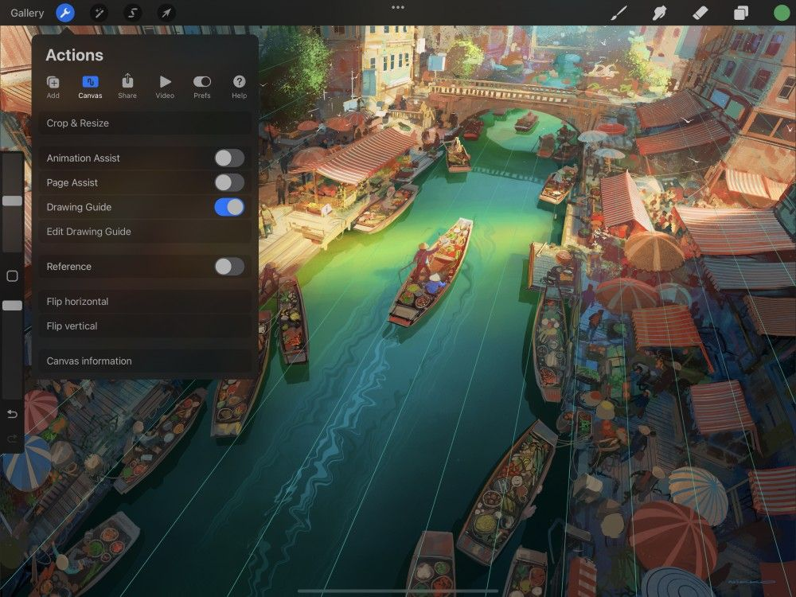
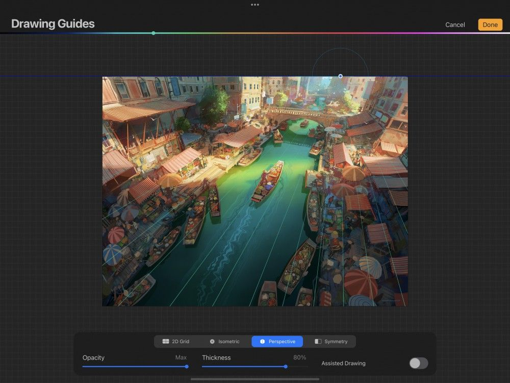
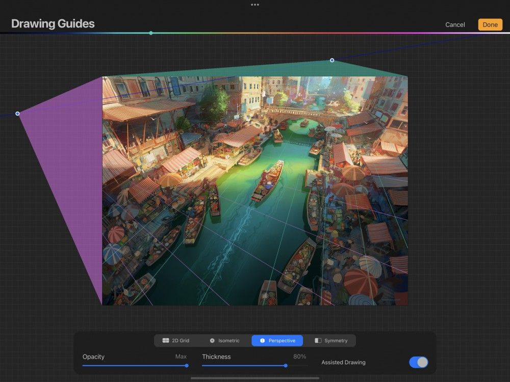
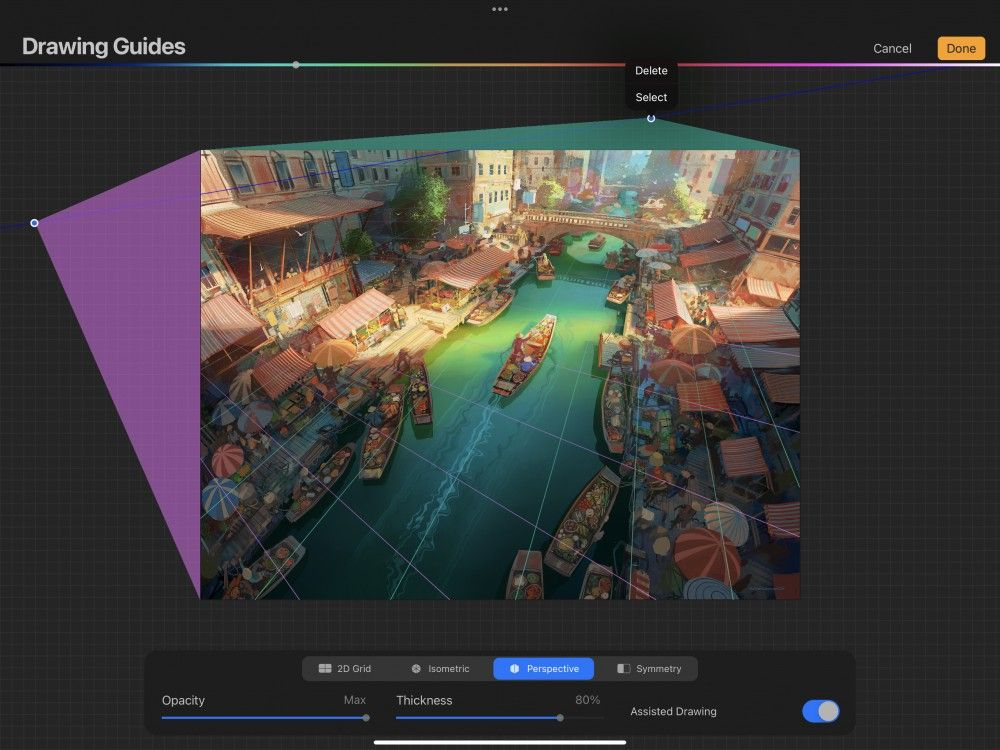

📖 Đã dịch sang tiếng Việt. Thuật ngữ chuyên môn giữ tiếng Anh — rê chuột để xem nghĩa (tooltip).
Perspective Guide
Đường dẫn phối cảnh (Perspective Guides) cung cấp các điểm tụ có thể điều chỉnh. Dùng chúng để dựng các vật thể và phông nền chân thực trong tác phẩm.
Tùy chỉnh
Thiết lập và điều chỉnh đường dẫn Perspective của bạn.


Trong Actions → Canvas, chạm Edit Drawing Guide (chỉnh sửa đường dẫn). Thao tác này sẽ đưa bạn đến màn hình Drawing Guides.
Chạm nút Perspective ở dưới cùng màn hình.
Đường dẫn Perspective xuất hiện dưới dạng các đường mỏng phủ lên tác phẩm. Bạn có thể điều chỉnh hình thức và hành vi của đường dẫn bằng các tùy chọn sau.

Vị trí và độ xoay
Kéo các nút màu xanh lam và đường chân trời để điều chỉnh vị trí và góc chính xác của các đường lưới.

Thêm điểm tụ (Vanishing Points)
Chạm bất kỳ đâu trên màn hình để tạo một điểm tụ. Bạn có thể tạo tối đa ba điểm tụ, cho phép chọn phối cảnh một điểm, hai điểm hoặc ba điểm.
Kéo từng nút để điều chỉnh đường dẫn Perspective.
Phối cảnh một điểm
Phối cảnh một điểm, còn gọi là phối cảnh song song, là dạng phối cảnh đơn giản nhất. Mọi bề mặt trong ảnh hướng về phía người xem đều giữ nguyên hình dáng thật, không bị biến dạng: các đường thẳng đứng và đường ngang song song với các mép khung vẽ và đường chân trời của tác phẩm.
Chỉ những bề mặt tiến về / xa người xem mới bị biến dạng: tất cả các đường này hội tụ về một điểm tụ duy nhất — ‘một điểm’ trong ‘phối cảnh một điểm’.
Phối cảnh hai điểm
Trong phối cảnh hai điểm hay phối cảnh góc, chỉ có các đường thẳng đứng là song song. Mọi đường ngang hội tụ về một trong hai điểm trên đường chân trời. Loại phối cảnh này cho kết quả chân thực hơn phối cảnh một điểm, nhưng không có chiều sâu bằng phối cảnh ba điểm.
Phối cảnh ba điểm
Trong dạng phối cảnh phức tạp nhưng chân thực nhất, mọi đường lùi về một trong ba điểm tụ. Điều này mô phỏng cách chúng ta nhìn thế giới thực: các vật thể lùi xa khỏi ta trên mọi trục. Nhờ đó các cấu trúc trong tác phẩm có chiều sâu, bề rộng và chiều cao đáng tin.

Xóa điểm tụ
Chạm vào một điểm tụ, sau đó chạm Delete (xóa) để gỡ bỏ nó.
Hiển thị
Điều chỉnh màu của các đường dẫn bằng thanh sắc màu ở trên cùng màn hình Drawing Guides.
Độ dày
Điều chỉnh độ dày của các đường dẫn từ vô hình đến dễ thấy.
Điều chỉnh độ trong suốt của các đường dẫn từ vô hình đến đục đặc.
Drawing Assist (trợ giúp vẽ)
Drawing Assist tự động điều chỉnh nét vẽ khớp với hướng của các đường dẫn.
Hủy hoặc Lưu
Để quay lại khung vẽ mà không thay đổi gì, hãy chạm Cancel (hủy). Để lưu thay đổi, hãy chạm Done (xong).
Still have questions?
If you didn't find what you're looking for, explore our video resources on YouTube or contact us directly. We’re always happy to help.